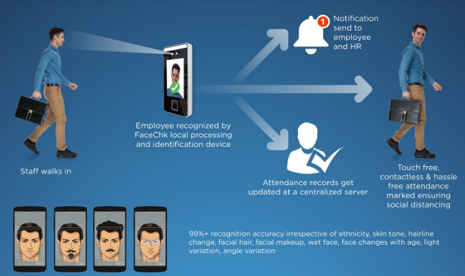
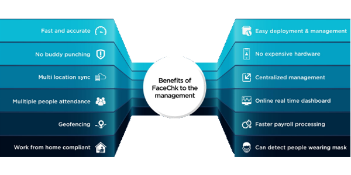

Automatic Facial Recognition Attendance System is basically an automated identification system that can recognize any individual whose facial features are stored in the database. In the coming years, this technology can very well be employed by all the corporate offices to track the employees entering the premises. The facial recognition attendance system follows a fixed procedure to detect the individuals in front of the camera and then automatically updates their attendance in the attendance server
How it works?
Facial Recognition Attendance System follows a 5 step process to update the attendance of the employees From the image captured by the camera, first, the system detects the face. Before the face can be matched with a name in the database, it is important to read all the aspects of the image. The facial features in the captured image are matched with enrollment data stored in the face database. If there is a match the system detect it shows the name of the employee. The name of the employee will be visible for the security personnel to see below the box on the employee’s face.
Enrollment
Before the system can be placed in any office, it records and stores the facial features of the employees. Enrollment is basically storing the biometric features of the employees in a database. It is a one-time process which requires the employees to stand in front of a camera which records and stores the unique facial attributes of the employees with their name and designations.
After the enrollment procedure is completed, the system is integrated with the attendance server to update the attendance of the employees entering the facility
Image Enhancement
When an employee comes in front of the camera, it takes an image and sends it to the image enhancement module. The image is enhanced within the system before the recognition or detection starts. Image enhancement is done so that all the facial features can be clearly detected by the system
Attendance Management
As the system detects the name of the employee by matching the image with the face data, the attendance of that employee is updated in the attendance server automatically. From start to the end, there is no human involvement in the Facial Recognition Attendance System which makes it free from any manual errors. The system is automated and provides a fast response. As the employee walks towards the camera, the system starts its work and within a second all the above-mentioned operations take place to provide seamless attendance management.
Alnirfana are working on Facial Recognition Attendance System for years and continue making new breakthroughs making this biometric attendance system even more efficient.